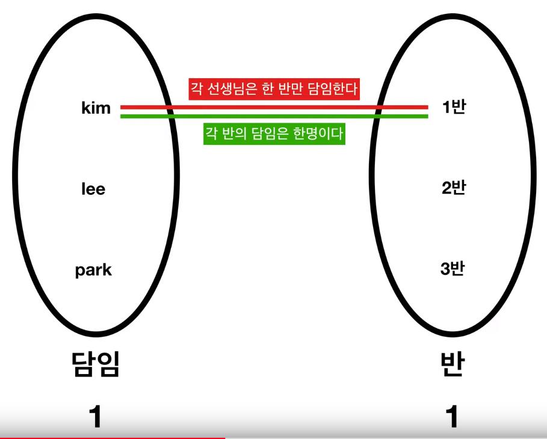
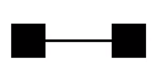
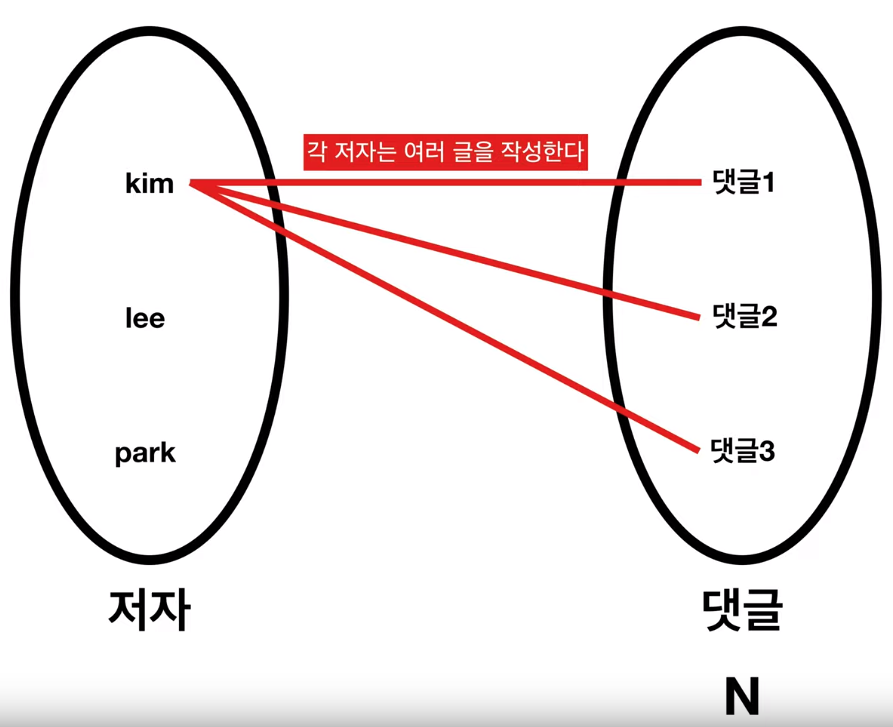
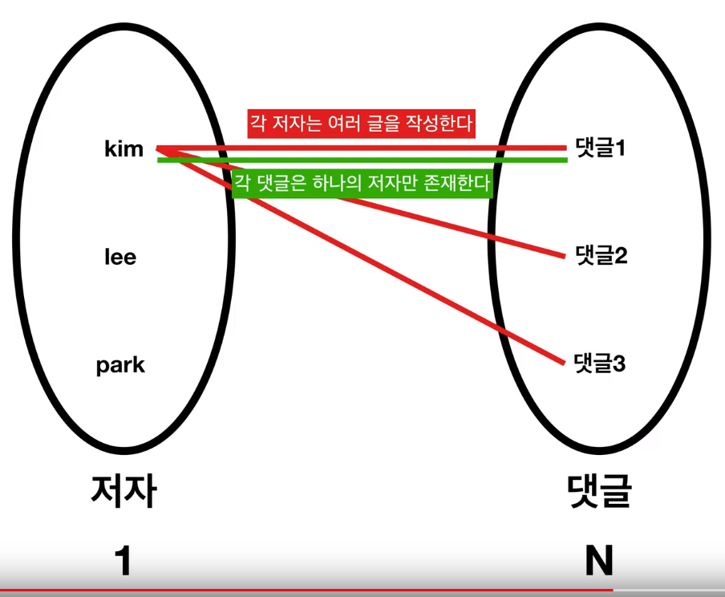
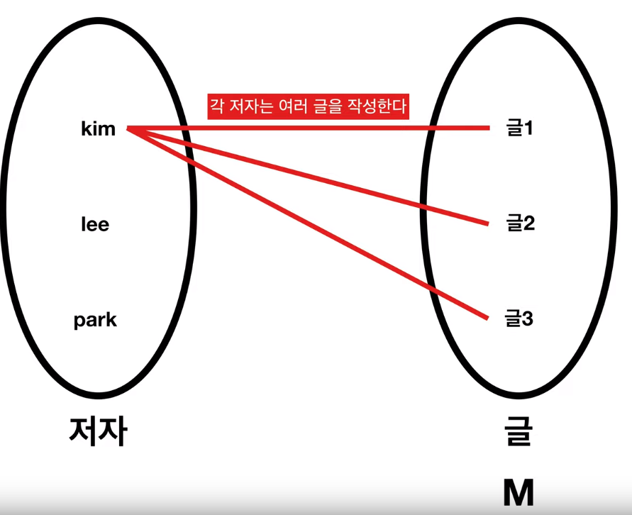
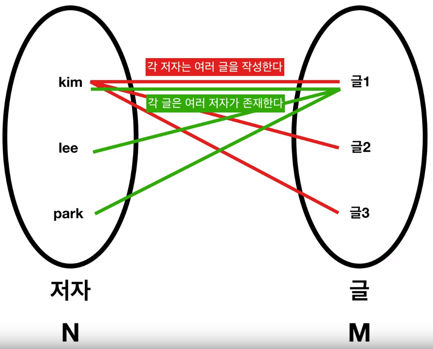

This is personal study note
Copyright and original reference are from:
https://www.youtube.com/watch?v=RHrp8xsgVr8&list=PLuHgQVnccGMDF6rHsY9qMuJMd295Yk4sa
================================================================================
You should consider "cardinality" and "optionality" elements in terms of relationship
================================================================================
Cardinality: "number order" like 1,2,3,...
================================================================================

"One homeroom teacher" can have "one classroom"
"One classroom" can have "one homeroom teacher"
Homeroom_teacher table
id name class_id
1 kim 1
2 lee 2
3 park 3
Class table
id name homeroom_teacher_id
1 1class 1
2 2class 2
3 3class 3
================================================================================
Above 1:1 relationship can be represented by

================================================================================

"One author" can write "multiple replies"
Author : Reply (N)
================================================================================

"One reply" is written by "one author"
Author (1) : Reply (N)
================================================================================
Author
id name
1 kim
2 park
3 lee
Reply
id contents author_id
1 hi 1
2 good 1
3 curious 2
4 bad 3
================================================================================
Therefore, above relationship becomes 1:N relationship
And, in ERD, 1:N relationship can be represented by
Some ERD uses "1 and N notation" over the line without using "trident shape"
================================================================================
Suppose the scenario where "one text" can be written by "multiple authors" like "coauthor"
================================================================================

"One author" can write "multiple texts"
Author : Texts (M)
================================================================================

"One text" can have "multiple authors"
Author (N) : Texts (M)
================================================================================
In ERD, N:M relationship can be represented by